MH-001 — Trung tâm Affiliate và điều kiện tham gia
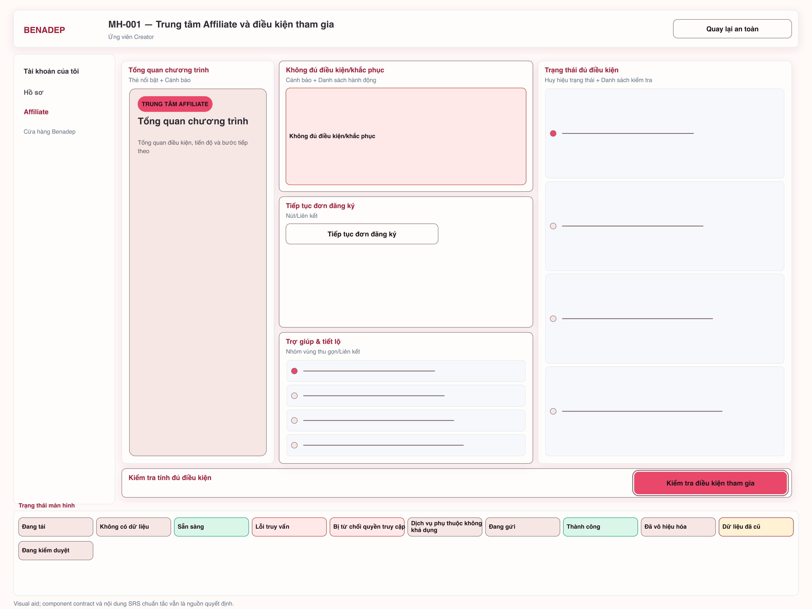
12 màn hình đại diện theo visual system Benadep Luxury Blush. Kiểm tra ở chế độ vừa chiều rộng trước, sau đó chuyển sang 100% pixel để rà từng chi tiết ở đúng độ phân giải 3840×2880.

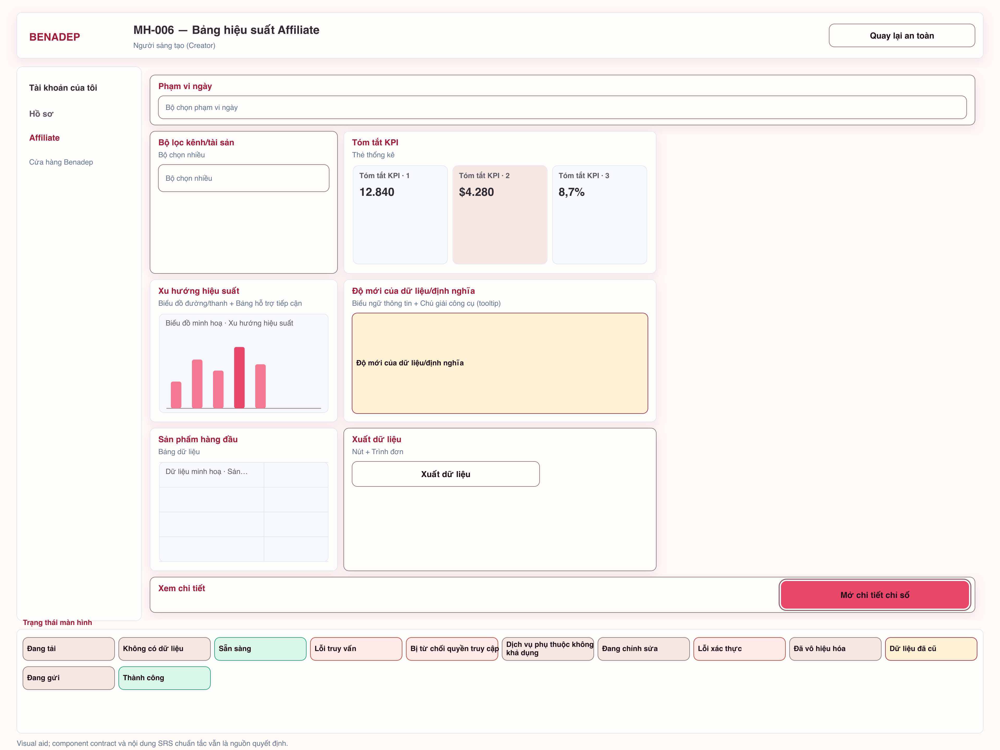
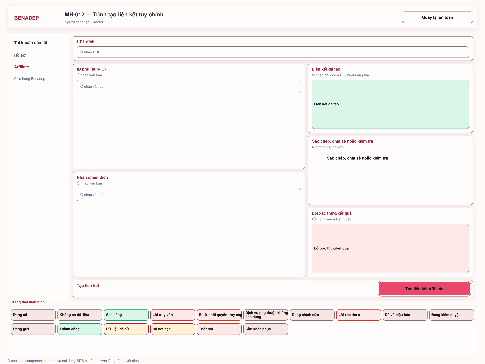
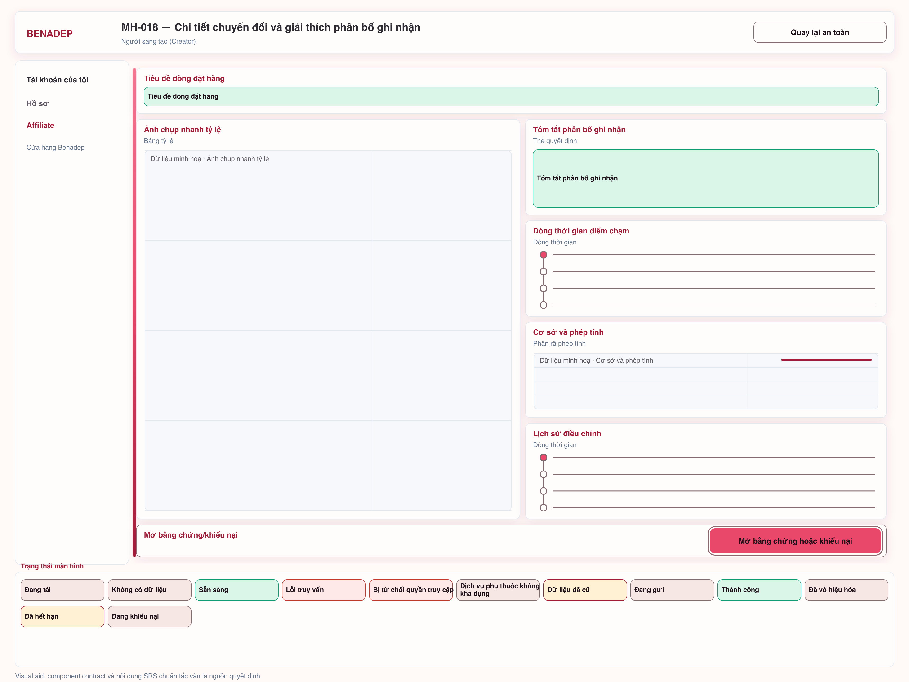
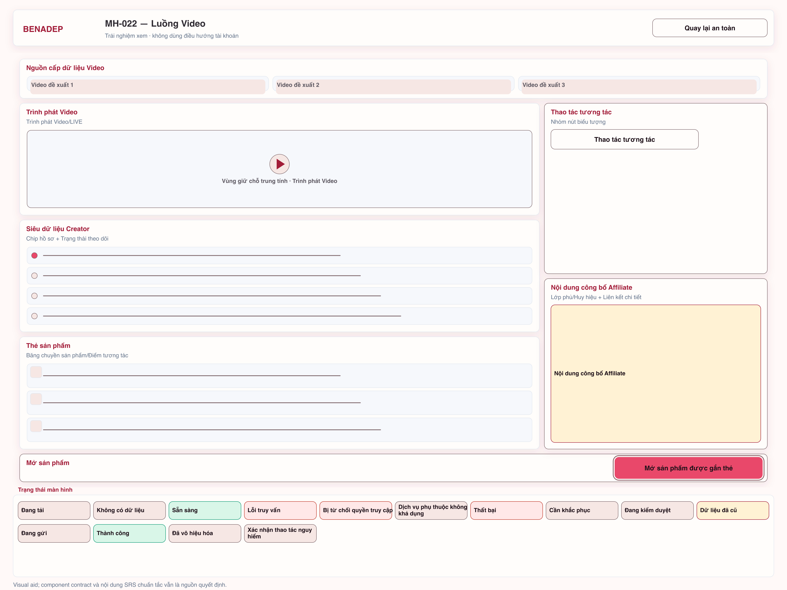
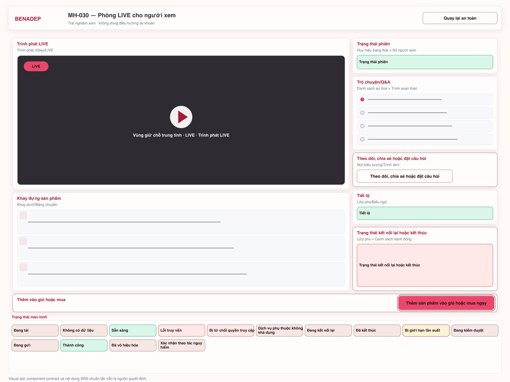
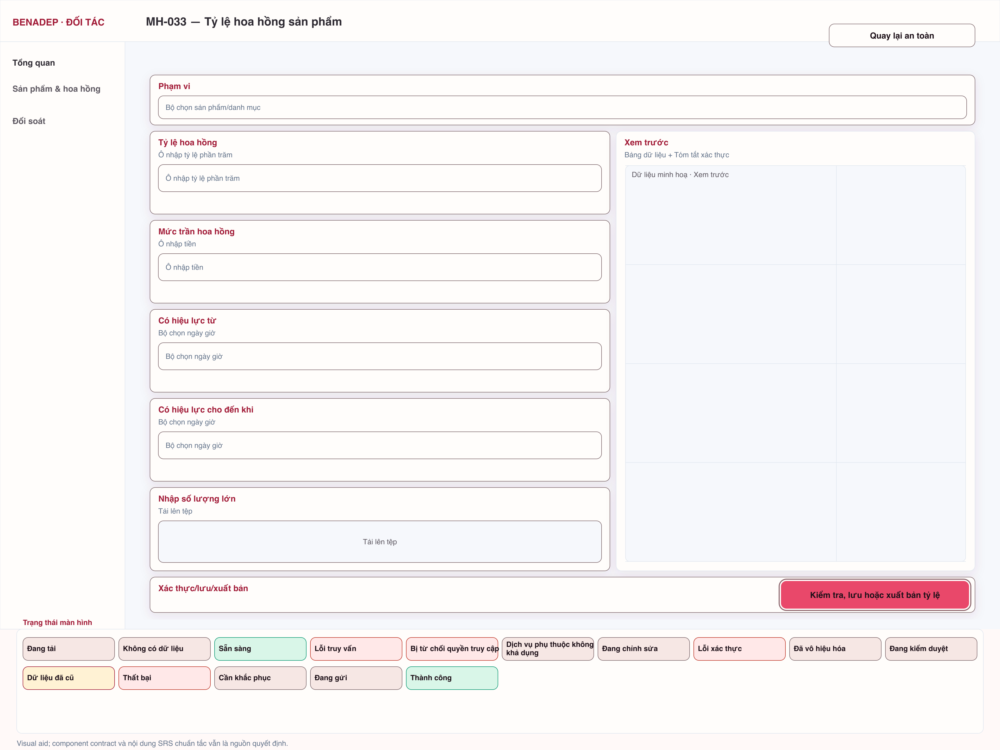
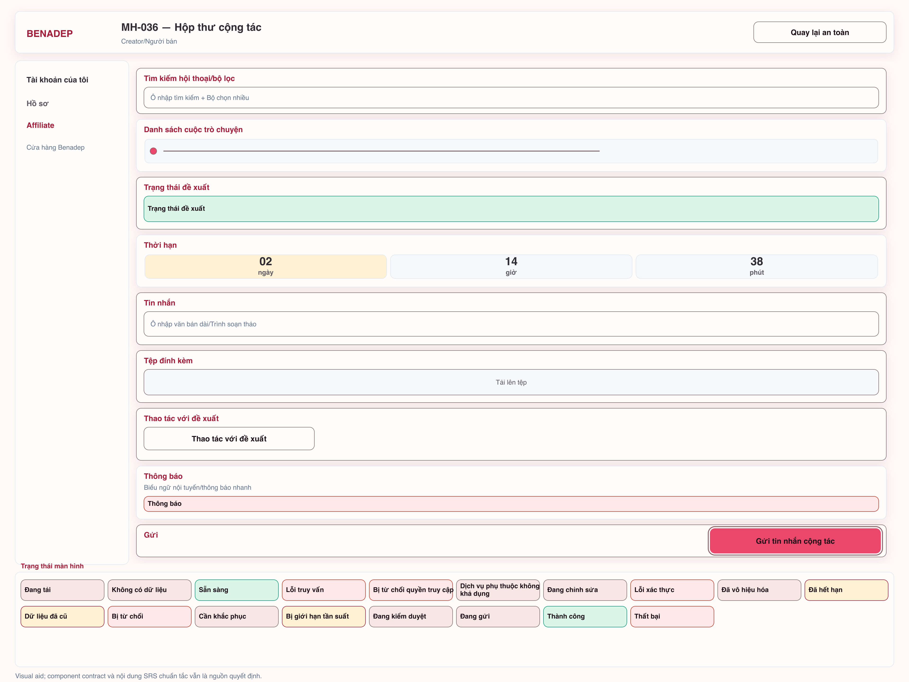
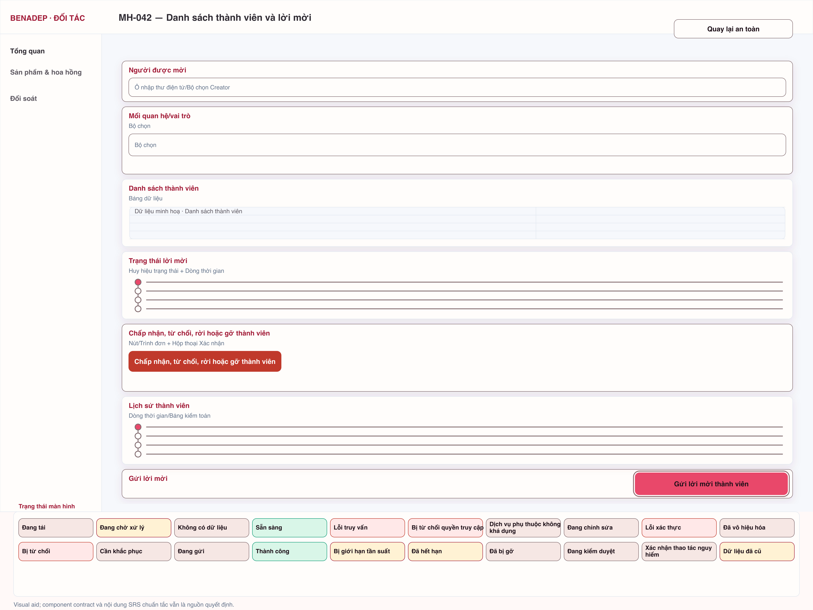
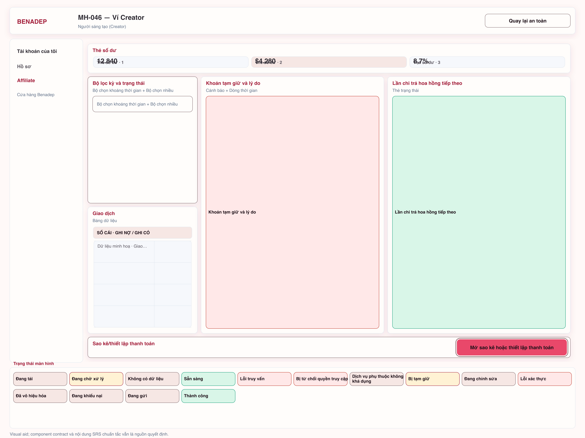
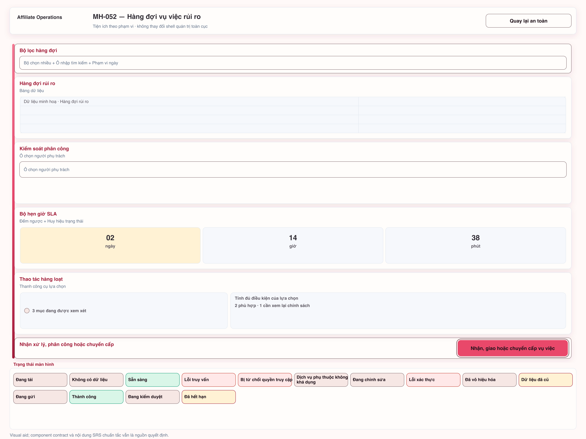
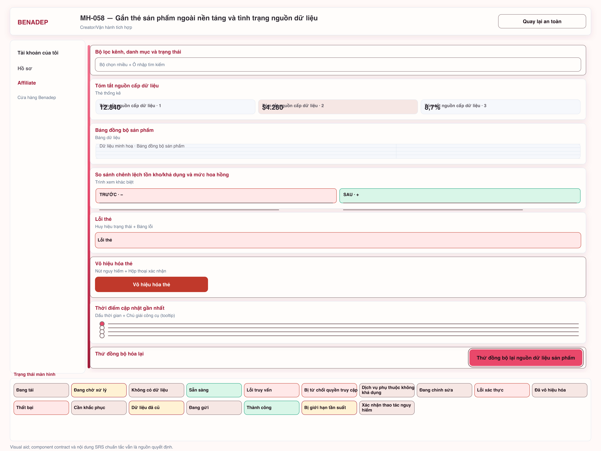